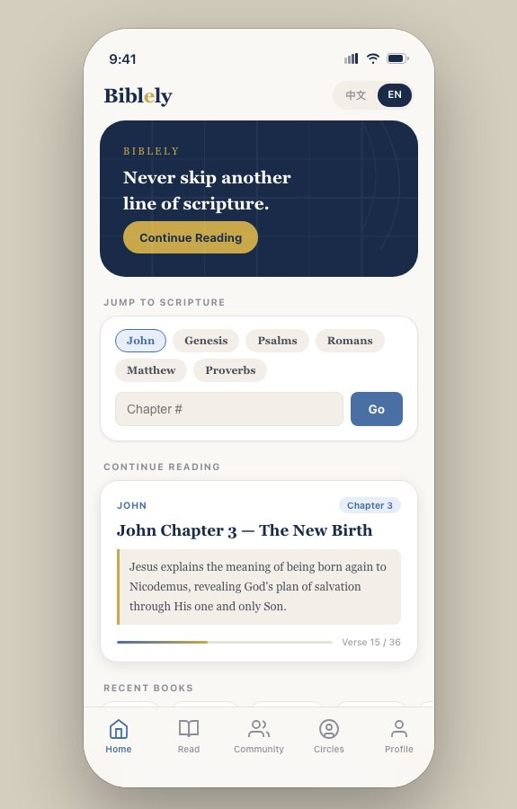
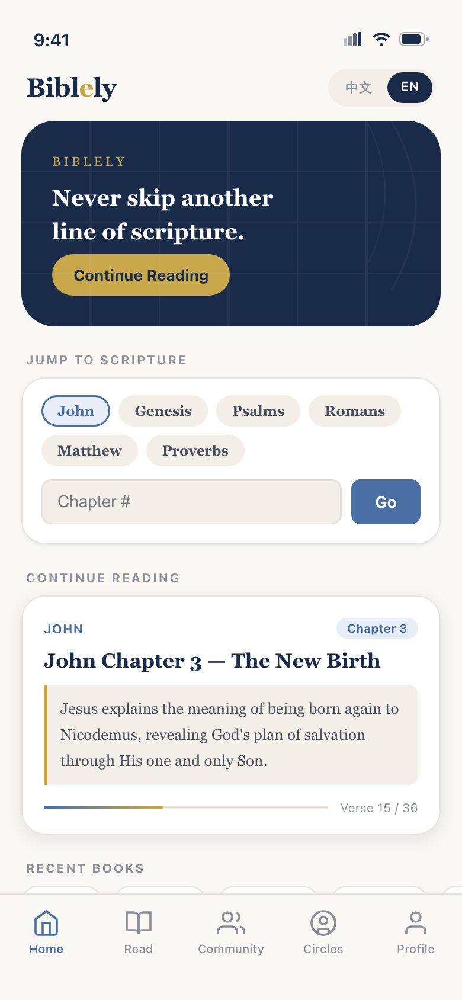
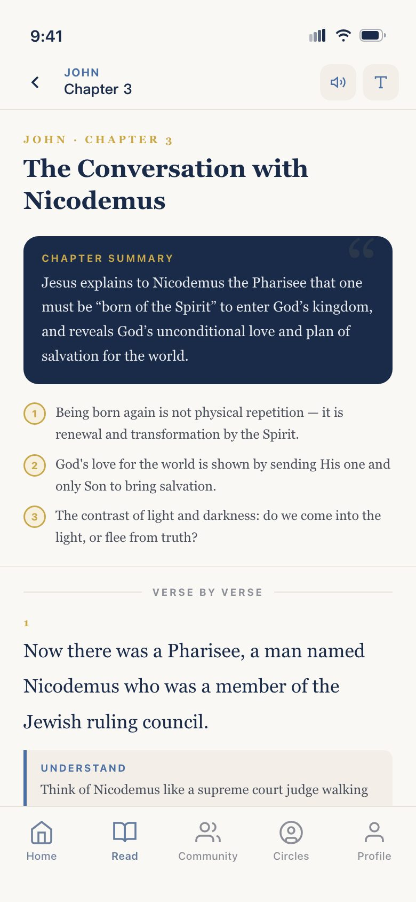
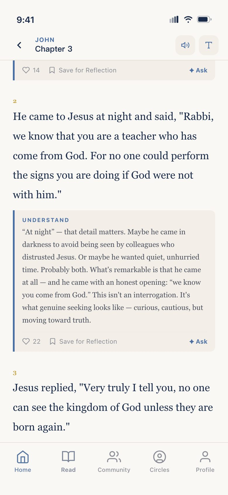
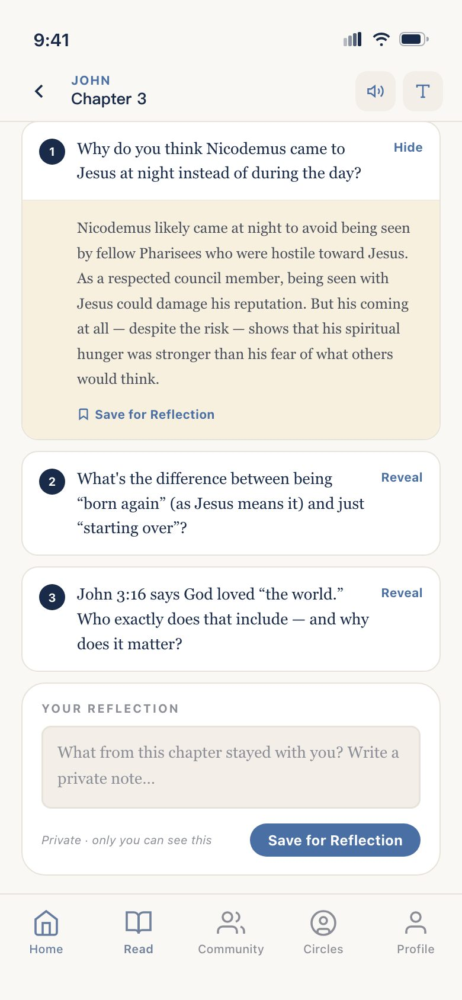
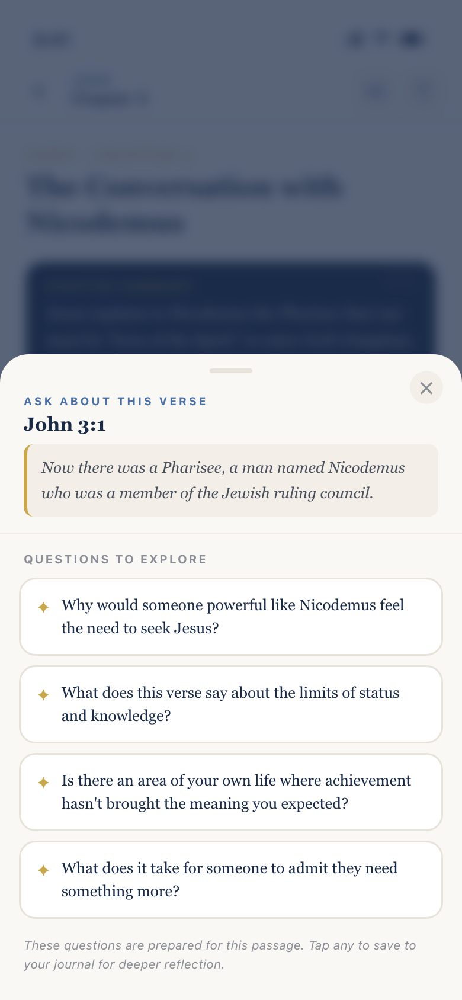
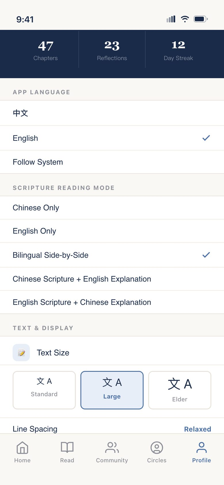

Product brief · Biblely · personal project
A pastor in your pocket, for people who'd rather read alone.
Biblely explains scripture line by line, in plain words, in Chinese and English. I'm a Christian, and I built it for a problem I have myself. I did every part myself, from the first interview to a prototype you can use below, and then planned how to ship it.

My role · Solo — research, UX, UI, front-end prototype, product strategy
01 · What I heard
People don't stop reading because they stop believing.
I interviewed my mom, a few friends from church, and myself. Most people in my church are Chinese, but the problem isn't Chinese-specific — people everywhere read the Bible, and they get stuck in the same places. Four findings came up again and again:
| # | What I heard | What it means | Product answer |
|---|---|---|---|
| F1 | “Every translation reads differently, and none of them are easy.” | The text itself is the first barrier — classical Chinese and old English both | Plain-language explanation under every verse |
| F2 | “There's no pastor to walk me through it line by line.” | Sunday sermons explain; reading alone at home doesn't | A “tutor” voice: chapter summary, key points, verse-by-verse notes |
| F3 | “Without a small group I don't keep going.” | Consistency comes from accountability, not willpower | Progress, streaks and a reflection at the end of each chapter |
| F4 | “I'd rather learn quietly on my own.” | Not everyone wants a group — and groups are what most apps push | Private by default; sharing is always a choice |
The job to be done: “When I can't make it to Sunday service, help me understand today's passage as if someone were explaining it to me.”
02 · Who it's for
Two readers, one app.
Persona 1
The quiet learner
- Who
- University student in Canada, Christian, reads in both Chinese and English
- Context
- Classes and work clash with Sunday service; prefers studying alone over group meetings
- Needs
- Someone to explain the passage without having to join anything; switch languages when a verse doesn't land
- Frustration
- Apps that are either a wall of text or a social feed
“I want to understand it — I just don't want to do it in a room full of people.”
Persona 2
The first-time reader
- Who
- Middle-aged or older, Chinese-first, without much formal higher education
- Context
- Reads at home, often on a phone a family member set up; small text is hard
- Needs
- Everyday words instead of theology; large type; the option to listen instead of read
- Frustration
- The Chinese Union Version's classical phrasing; feeling embarrassed to ask
“I read every word and still don't know what it said.”
03 · The market
Plenty of Bibles. Nobody to explain them.
The category splits in two. Library apps give you dozens of translations, audio and reading plans, but leave understanding to you. AI chat apps will explain, but in English only, as an open-ended conversation with no structure, and behind a subscription. None of them pair a plain-language explanation of every verse with true bilingual reading and a mode built for older eyes.
| App | Rating | Ratings | Price | Explains verses? | Chinese / bilingual |
|---|---|---|---|---|---|
| YouVersion Bible App | 4.9★ | 14M | Free | Plans, devotionals, videos — no line-by-line explanation | Chinese interface; no side-by-side reading described |
| Dwell | 4.9★ | 79K | $59.99 / yr | No — an audio Bible | Not described |
| WeDevote 微读圣经 | 4.9★ | 5.1K | Free | Lexicon and devotionals, not plain-language notes | 42 versions, Chinese-first |
| Bible Chat® | 4.7★ | 1.2K | $9.99–$59.99 | Yes — AI coaching sessions | English only |
| Biblely | — | — | Free; groups pay | Yes — every verse, plus summary and questions | 5 modes incl. side-by-side and mixed |
Source: US App Store, read 3 Nov 2026 — YouVersion · Dwell · WeDevote · Bible Chat®. Bible Chat® lists several plans without naming their terms, so its range is shown.
Number of ratings — the incumbents are huge
Biblely can't out-library YouVersion, and shouldn't try. It wins on one job the giant doesn't do: explaining.
Positioning
The top-right corner is empty: explained, and bilingual.
04 · Flow & structure
From “I'm stuck” to “I get it”, without leaving the page.
Before drawing a single screen I mapped the one path that matters: a reader opens the app alone and finishes a chapter understanding it. Every step answers one of the four findings (F1 to F4). Anything that isn't on this path — community, groups — lives in its own tab, so the reading never pushes anyone into a crowd.
- 1Open the appHome resumes where you stopped — verse 15 of 36F3
- 2Chapter summaryWhat this chapter is about, in three key pointsF2
- 3Verse + plain noteAn everyday-words explanation under every verseF1
- 4Comprehension questionsTry first, then reveal the answerF2
- 5Private reflectionWritten for yourself; only you can see itF4
- 6Chapter completeProgress and streak move forwardF3
Ask opens questions prepared for that verse — guided, never an open chat.
Text size up to Elder, read aloud, and five language modes.
Share a reflection publicly, or read with your group in Circles.
| Tab | What's in it | Why it's a tab of its own |
|---|---|---|
| Home | Continue reading, jump to any book and chapter, recent books | One tap back into the chapter — no decision about where to start (F3) |
| Read | Summary, verse-by-verse notes, questions, private reflection | The whole core path on one scrolling page, like a sermon you can pause (F1, F2) |
| Community | Today's reflection prompt and other readers' public reflections | Kept out of Read so the quiet learner never has to see it (F4) |
| Circles | Private church groups, shared reading plans, prayer topics | For readers who do want a group — and the paid tier (F3) |
| Profile | Language, reading mode, text size, read aloud, privacy | Set once by a family member, then forgotten (persona 2) |
05 · Designing the screens
Every screen answers something I heard.
The visual language is calm on purpose: warm paper, deep navy, one gold accent. Scripture is set in a serif and the explanations in a plain sans, so a reader can always tell the text from the note about it. Six of the screens, and the decision behind each:

Start where you left off
The biggest thing on screen is Continue Reading. Without a group to keep you going, the app removes the first excuse: deciding where to begin.

The summary comes first
A pastor tells you what the passage is about before reading it. So does Biblely: a summary and three key points sit above verse 1.

The note is never a tap away
Each verse is followed by its Understand note in a tinted block. No pop-ups, no footnote numbers — the explanation is simply the next thing you read.

Think first, then check
Answers stay hidden until you tap Reveal. The reflection box below says only you can see this — private by default.

Guided, not a chatbot
Ask opens questions prepared for that verse. An open AI chat could invent doctrine; prepared questions keep the help trustworthy.

Built for older eyes
Five reading modes, from Chinese-only to side-by-side, and a text size called Elder — named for who it's for, so it's easy to find.
Design system
#1A2B4A#C9A84C#4A6FA5#FAF8F406 · Prototype
Read John 3 the way Biblely reads it.
I built the prototype myself in HTML, CSS and JavaScript, so it behaves like the app instead of a set of linked pictures. Scroll inside the phone: switch between 中文 and EN, read the note under each verse, reveal the comprehension questions, open Ask, and try the text-size and reading-mode settings under Profile.
Open it full screen ↗Usability test plan
Five sessions per persona, on their own phones, thinking aloud. Each task checks one promise the design makes.
| Task | Persona | Checks | Pass when |
|---|---|---|---|
| Pick up yesterday's chapter | Both | Home resumes reading (F3) | Reaches the right verse in one tap, under 10 seconds |
| Explain John 3:3 in your own words | First-time reader | Plain notes are understood (F1) | Says what “born again” means without being prompted |
| Make the text easier to read | First-time reader | Elder size is findable | Finds and turns on Elder without help |
| Read in Chinese with English beside it | Quiet learner | Reading modes are clear | Chooses side-by-side on the first try |
| Write a note no one else can see | Quiet learner | Private by default (F4) | Trusts the note is private, and says why |
07 · What to build first
Eight features. Four make the cut.
The prototype shows the whole vision. To decide the build order, I scored each feature with RICE — Reach (of 10 readers, how many use it), Impact (1–3), Confidence, and Effort in person-weeks. Score = R × I × C ÷ E.
| Feature | Reach | Impact | Confidence | Effort | Score | Release |
|---|---|---|---|---|---|---|
| Chapter summary + 3 key points | 8 | 2 | 80% | 1 | 12.8 | v1 |
| Large text + read aloud | 4 | 3 | 80% | 1 | 9.6 | v1 |
| Verse-by-verse explanation | 10 | 3 | 80% | 3 | 8.0 | v1 |
| Five bilingual reading modes | 6 | 2 | 80% | 2 | 4.8 | v1 |
| Comprehension questions | 5 | 1 | 50% | 1 | 2.5 | v2 |
| Ask about this verse | 5 | 2 | 50% | 5 | 1.0 | v2 |
| Public community reflections | 3 | 1 | 50% | 4 | 0.4 | v3 |
| Private church Circles | 2 | 2 | 50% | 8 | 0.3 | v3 · paid |
RICE score
What the scores say
Everything that helps one person understand scores high; everything social scores low. That matches the interviews — the quiet learner never asked for a feed. Large text and read-aloud rank second because they're cheap and decide whether the second persona can use the app at all.
Community isn't cut — it moves to v3, when there are enough readers for it to feel alive instead of empty.
08 · Roadmap & business model
Free for the reader. Paid by the group.
| Release | Theme | Ships | Done when |
|---|---|---|---|
| v1 | Understand | Summary & key points, verse explanations, bilingual modes, large text, read aloud | A first-time reader finishes a chapter and can say what it meant |
| v2 | Reflect | Comprehension questions, private reflection journal, Ask about this verse | Readers come back to their saved reflections |
| v3 | Together | Public reflections, private church Circles with leader notes, reading plans and prayer topics | A small group runs a 30-day plan inside the app |
Reading stays free: YouVersion set that expectation years ago, and a paywall in front of scripture would turn away exactly the person who needs it most. The paid tier is Circles — a private space for a fellowship or small group, with leader notes, church reading plans and prayer topics — priced in the prototype at ¥18 a month after a 7-day free trial. Group leaders have a reason and a budget; individual readers don't need to pay.
09 · How I'll know it works
Measure understanding, not just opens.
| Metric | How it's counted | Why |
|---|---|---|
| Chapter completion | Readers who reach “chapter complete” ÷ readers who open a chapter | The core promise: getting through, not skipping |
| Understanding | Comprehension questions answered per finished chapter | Opens don't prove anyone understood anything |
| Consistency | Days read per week; share of readers with a 7-day streak | Replaces the small group as the thing that keeps people going |
| Reflection | Reflections saved per finished chapter (private and public) | Shows the reading landed somewhere personal |
| Circle conversion | Circles that stay paid after the 7-day trial | Whether the business model holds |
| Risk | Why it matters | Mitigation |
|---|---|---|
| Theological accuracy | One wrong explanation costs the trust of a whole congregation | Explanations reviewed by pastors before release; sources shown under each note |
| AI answers in “Ask” | Open-ended AI can invent doctrine | Start with questions prepared for each passage, as the prototype does; open chat only with review |
| Translation licensing | Modern English translations such as the NIV need a licence to use in an app | Launch with public-domain texts (CUV, KJV/WEB), license others later |
| The name | Another developer already sells “Biblely Bible Chat” subscriptions on the App Store | Check trademarks and App Store names before launch; keep a backup name ready |